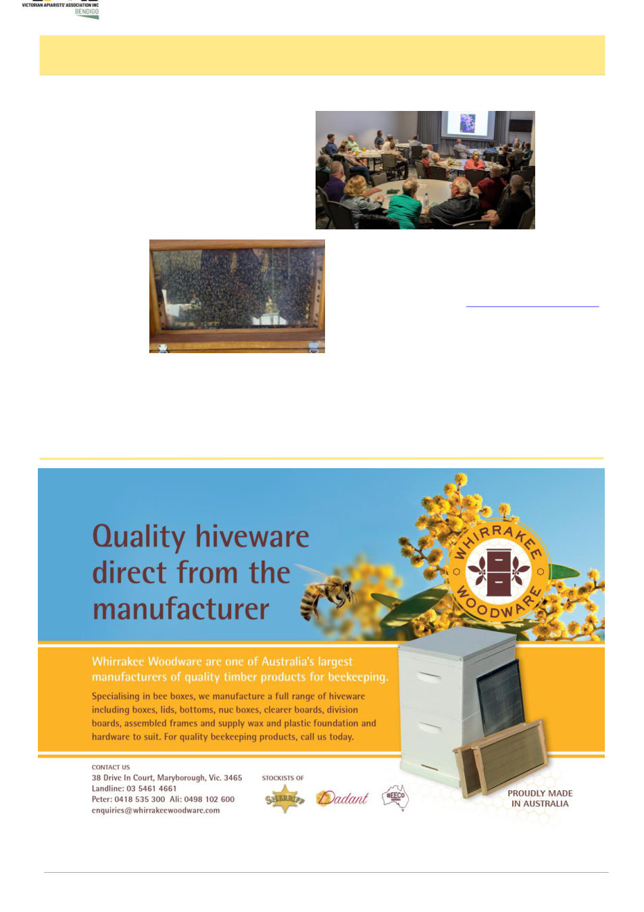

April 2026
7
Bendigo Branch Report
Central Victoria has seen sporadic flowering of grey
box mid to late March, with some red bottlebrush
(Callistemon) observed flowering in late March, unusu-
al for this time of year. I suspect the weather has the
local flora second guessing itself. Thankfully the earli-
er rains have so far promoted continued growth on
quite a few tree species thus far.
The 2026 Bendigo Sustainability Festival invited the
branch to staff a marquee promoting the club. There
was no doubt the two biggest draw-cards were the hon-
ey tasting, drawing in all ages like robber bees, while
others showed amazing focus and patience searching
for the queen in Staf-
ford’s
observation
hive (right).
It was entertaining
seeing family mem-
bers
hone
in
on
which honey variety
was their favourite
and selling it’s vir-
tues to other family
members in order to influence the decision maker to
purchase their favourite.
Well done Angelique, Graeme, Jess, Kris, Peta and
Stafford on answering a plethora of questions, thanks to
Gareth Maunder and Richard Collins for your contin-
ued support of the branch, greatly appreciated. Shout
out to Jo Griffiths for representing the branch and
providing a number of talks to community groups on
supporting bees and suburban pollination interests.
Sandy from
the Bendigo
Native plant
group
pre-
sented at the
April meet-
ing showing
a variety of
attractive
native plants
that grow well in the area, attract bees and provided
examples that flower across all seasons.
The next Bendigo branch event is our annual Au-
tumn Pack-down at 1pm on Sunday the 26th April at 2
Griggi Road, Huntly. Ange will post details on Face-
book, please RSVP Peta bbvaasecretary@gmail.com
for numbers and catering. Activities include: brood
inspection; mite wash; honey removal; pack-down; un-
capping; honey extraction; bee talk; cuppas; and some
mite discussion thrown in. Bring the family for a great
social day and channel sunny warm weather for the
day, especially the hive work. At our meeting on
Wednesday 6th of May the AgVic chemical team will
be presenting, and there’s some exciting club news.
Keep testing, monitoring, learning, sharing and
communicating,
Jamie Trimby
Photo: Kris Barker